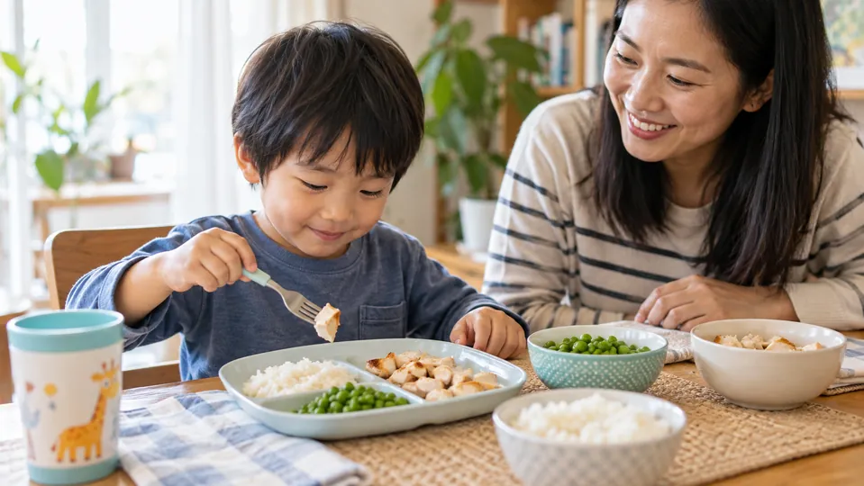

Food & Routines
Is it okay to serve meal ingredients separately?
Separate components can help a child recognize familiar food. You can offer the family meal in a form that is easier to explore.

Quick Answer
Separate components can help a child recognize familiar food.
Try one small step
- Keep one familiar component available.
- Offer a small amount of another component without a demand.
- Let your child decide whether to taste within your meal structure.
What it might look like
For pasta night, put pasta, sauce, and soft vegetables in separate spaces. You do not need to hide a new ingredient or celebrate a bite more than a refusal.
Make the plan your own
Choose one idea and ask the people involved what support they need. Notice whether it makes the day more manageable, then keep, change, or drop it. You do not have to complete every suggestion. Different ages, abilities, cultures, and family arrangements may call for different choices.
Personalize a little wins routine · Find peer connection in Parent Club · Write a Parent Journal note
Resources and context
These original practical examples are general education, not a diagnosis or individualized care plan. Speak with a qualified professional about health, feeding, development, or mental health concerns. See AAP HealthyChildren: Nutrition for broader information. Links checked October 9, 2026.